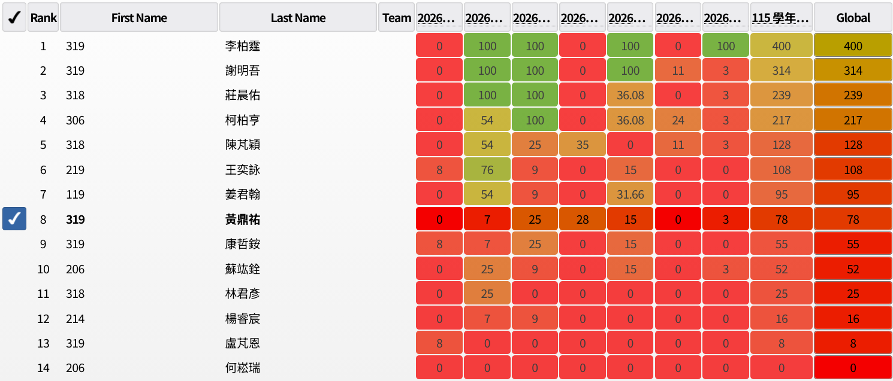

2026校內資訊能競初選
成績…

前情
初選打得那麼好顯然是超常發揮了
為了複選也可以打好 所以我最近這一個星期都在爆捲演算法
學了一堆東西 像是動態開點線段樹 發現其實沒有很難(?)
還有 HLD 這種東西 把我以前沒什麼碰的部份補了一些
最近這幾天更是拿著 IOIC 講義啃 雖然都沒什麼看例題就是了w
覺得自己實力大增 然後感冒了
小(大)意外
我在上微積分的時候在捲樹論的樣子
然後水壺沒蓋好 打翻了 啪
電腦進水 現在好像還在修 我處理很快應該是還好(希望)
下次水壺我要用會自己關起來的:(
考試前
那天早上有公假 然後三四節在成大上課
所以我睡到 8:30 才起床 好爽
但是 12:30 就開測機了 我回到學校好像 12:15
所以速速吃完飯 就暈碳了
btw 我在全家買飲料時遇到國文老師 老師把我的飲料一起結了 謝謝老師
測機
刻了一顆沒有懶標的線段樹丟到 cses 上 AC 了很爽\
賽中
我的策略是先看完每題然後想一下 想完全部再實作(顯然高估自己了)
然後看到 pA wtf 完全沒想法 花了 10 分鐘去看下一題
馬上想到是二分搜加上貪心之類的 但是沒有 greedy 的想法
到了 pC 看到是 Nim game 但是我只會一般的 Nim 想說隨便丟看看
然後拿到 25 分 感覺這題比較簡單 所以好像花了一些時間在砸這題
接著又繼續看 題序有我??????? 超怪 然後注意到我好像看不太懂題目
就先跳題看 EF 了
看到 E 我一開始以為是排序網路 然後就整個想偏了 也沒像上次一樣去看配分
後來有想到 quick sort 結果實作錯了…
應該要可以通靈出來答案的 可惜整個方向都想錯了
F 看完我自己感覺好像 pbds 有料(根本想錯) 就開始刻
G 就是一個沒看懂不是很想寫 結果解法很簡單、 真的不想看那麼麻煩的題目w
把全部題目看完就經過一個多小時了 有夠久
接著開始各種思考 但是毫無頭緒 所以砸 Nim 想 pB 然後時間就這樣過去了
我本來預計剩一個小時開始撈分 所以花了不少時間寫 quick sort 沒發現哪裡錯 可惡
還花了很多時間在找 pbds 的 merge 函式 花了大把時間才注意到 c++ 的 lib 在哪
結果最後那題沒有寫出來… 撈分還沒撈到 白寫了幾十行 code
開始撈分的時候我還一直把 pB 寫錯 戳去陣列外面還沒發現
我還想說題目是不是有出錯ww 結果是我眼殘哈哈
最後剩十幾分鐘的時候我就把 pD 的 28 水分撈出來了 好像是因為這樣我才噴上南區賽名額的 另類藏扣
總之最後結果就是只有 78 分 我原本目標是 400 分的欸(好像最多也只能拿到 400 多分以我的實力)
賽後
今天拿到的分數全是暴力分 注(通)意(靈)力有夠不足
雖然很有可能是因為感冒(還找藉口阿) 感覺接下來把新學的技巧練上手後要開始刷題目練手感了
注意力不集中之外還有點想睡 debuff 點滿阿…
不知道為什麼很快三個小時就過去了
還好後來有找到我撈分 code 的 bug 不然我要沒有南區賽了q
感謝 brinton 不打 數學能競的也是(?) 雖然他們好像本來就沒辦法打了
接下來應該要每日三題 cses 練習好了(?
cover from: 杖與劍的魔劍譚